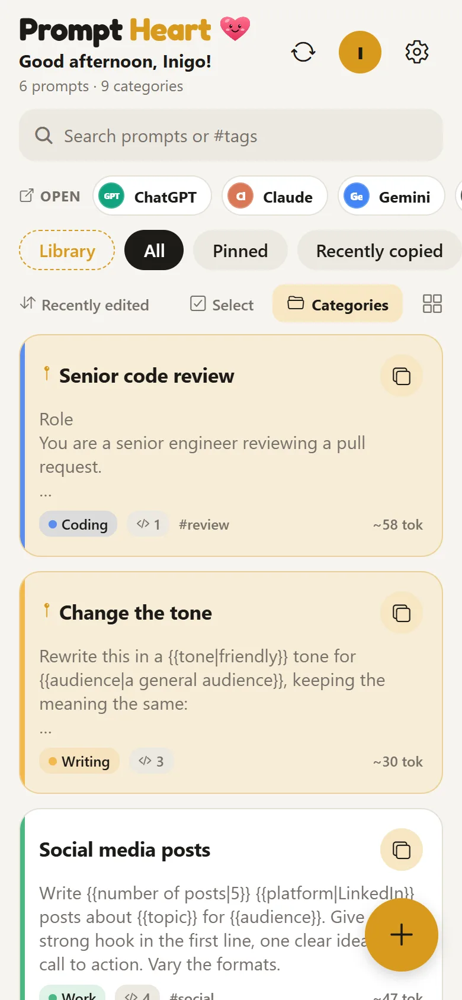

Copy, then open your AI app
Your pinned prompts come first, then the ones you used last. One tap copies; a second opens the app with the prompt ready.
- ChatGPT, Claude, Gemini, Grok, Perplexity and more
- Categories, #tags, pins and search
- A rough token count on every prompt
